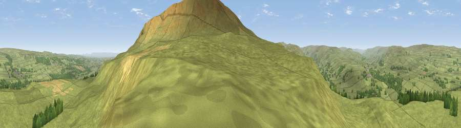

Viewpoint near West Burton
#9269 in England · top 14% of its area beats it · near West BurtonThe view, rendered

A 360° render of this exact spot computed from the terrain model, tree cover and land cover — summer colours, afternoon light, calibrated against photographs of famous viewpoints. Real trees, hedges and buildings will differ in detail.
The panorama
Grey silhouette: terrain skyline in each direction (720 bearings, Earth curvature and refraction included). Dashed green: skyline with trees (+15 m) and buildings (+8 m) as obstacles. Blue strip: how far the ground is visible on each bearing.
Where the view opens
Wedge length = distance to the farthest visible ground on that bearing (vegetation-aware). Rings at 10, 25 and 50 km.
What fills the view
93% grassland · 5% woodland · 2% cropland
Angular shares of the visible panorama (visual magnitude), not map area. Landscape diversity 0.14 (0–1 Shannon).
Key numbers
More beautiful places nearby
The staircase of upgrades: each row has a higher view potential than everything closer. Driving times are estimates from straight-line distance, calibrated against real road routing — check an actual route before setting out.
| Place | Direction | Drive | Score |
|---|---|---|---|
| Viewpoint near West Burton | SSE · 1 km | ~3 min | 73.2 |
| Viewpoint near West Witton | ESE · 2 km | ~4 min | 75.5 |
| Viewpoint near East Witton | ESE · 11 km | ~20 min | 77.8 |
| Whernside | W · 30 km | ~47 min | 79.9 |
| Viewpoint near Kirby Knowle | E · 42 km | ~61 min | 80.5 |
| Beacon Hill | ENE · 44 km | ~64 min | 84.7 |
| Carlton Bank | ENE · 50 km | ~72 min | 85.1 |
| Roseberry Topping | ENE · 60 km | ~82 min | 85.8 |
54.28245, -1.94582 · source: screening · position refined by local search. Computed location — check access rights before visiting.